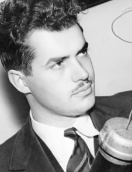

John Whiteside "Jack" Parsons (born Marvel Whiteside Parsons; October 2, 1914 – June 17, 1952) was an American rocket engineer and rocket propulsion researcher, chemist, and Thelemite occultist. Associated with the California Institute of Technology (Caltech), Parsons was one of the principal founders of both the Jet Propulsion Laboratory (JPL) and the Aerojet Engineering Corporation. He invented the first rocket engine to use a castable, composite rocket propellant, and pioneered the advancement of both liquid-fuel and solid-fuel rockets.